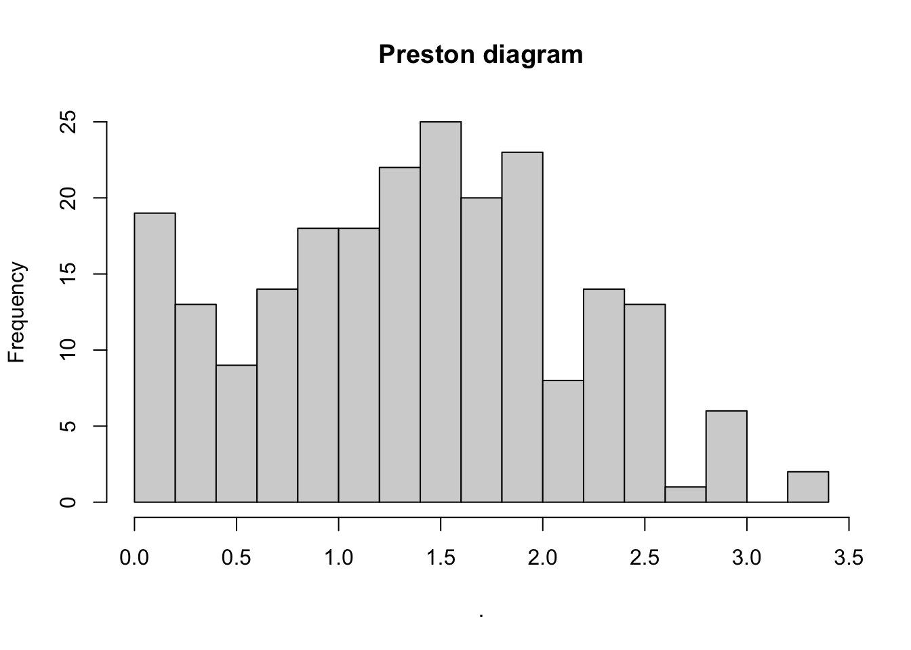

library("tidyverse")── Attaching core tidyverse packages ──────────────────────── tidyverse 2.0.0 ──
✔ dplyr 1.2.1 ✔ readr 2.2.0
✔ forcats 1.0.1 ✔ stringr 1.6.0
✔ ggplot2 4.0.3 ✔ tibble 3.3.1
✔ lubridate 1.9.5 ✔ tidyr 1.3.2
✔ purrr 1.2.2
── Conflicts ────────────────────────────────────────── tidyverse_conflicts() ──
✖ dplyr::filter() masks stats::filter()
✖ dplyr::lag() masks stats::lag()
ℹ Use the conflicted package (<http://conflicted.r-lib.org/>) to force all conflicts to become errorslibrary("vegan")Loading required package: permutedata(BCI)
# Sum the 50 1-ha plots
BCI_50ha_abd <- colSums(BCI) #all trees in BCI
BCI_50ha_abd/50 #trees per hectar (in Paracou there is 600 per ha) Abarema.macradenia Vachellia.melanoceras
0.02 0.06
Acalypha.diversifolia Acalypha.macrostachya
0.04 0.02
Adelia.triloba Aegiphila.panamensis
1.84 0.46
Alchornea.costaricensis Alchornea.latifolia
3.12 0.02
Alibertia.edulis Allophylus.psilospermus
0.02 0.54
Alseis.blackiana Amaioua.corymbosa
19.66 0.06
Anacardium.excelsum Andira.inermis
0.44 0.56
Annona.spraguei Apeiba.glabra
0.54 4.72
Apeiba.tibourbou Aspidosperma.desmanthum
0.42 1.04
Astrocaryum.standleyanum Astronium.graveolens
4.02 0.78
Attalea.butyracea Banara.guianensis
0.66 0.02
Beilschmiedia.pendula Brosimum.alicastrum
5.88 3.76
Brosimum.guianense Calophyllum.longifolium
0.02 1.10
Casearia.aculeata Casearia.arborea
0.46 2.00
Casearia.commersoniana Casearia.guianensis
0.06 0.04
Casearia.sylvestris Cassipourea.guianensis
1.08 1.74
Cavanillesia.platanifolia Cecropia.insignis
0.38 5.28
Cecropia.obtusifolia Cedrela.odorata
0.50 0.04
Ceiba.pentandra Celtis.schippii
0.78 0.76
Cespedesia.spathulata Chamguava.schippii
0.04 0.06
Chimarrhis.parviflora Maclura.tinctoria
0.02 0.02
Chrysochlamys.eclipes Chrysophyllum.argenteum
0.04 1.70
Chrysophyllum.cainito Coccoloba.coronata
0.50 0.44
Coccoloba.manzinellensis Colubrina.glandulosa
0.26 0.02
Cordia.alliodora Cordia.bicolor
1.26 6.50
Cordia.lasiocalyx Coussarea.curvigemma
7.28 1.10
Croton.billbergianus Cupania.cinerea
1.96 0.02
Cupania.latifolia Cupania.rufescens
0.24 0.08
Cupania.seemannii Dendropanax.arboreus
0.94 1.76
Desmopsis.panamensis Diospyros.artanthifolia
0.26 0.32
Dipteryx.oleifera Drypetes.standleyi
0.66 5.70
Elaeis.oleifera Enterolobium.schomburgkii
0.42 0.04
Erythrina.costaricensis Erythroxylum.macrophyllum
0.52 0.36
Eugenia.florida Eugenia.galalonensis
1.62 0.24
Eugenia.nesiotica Eugenia.oerstediana
1.10 3.54
Faramea.occidentalis Ficus.colubrinae
34.34 0.02
Ficus.costaricana Ficus.insipida
0.14 0.06
Ficus.maxima Ficus.obtusifolia
0.08 0.14
Ficus.popenoei Ficus.tonduzii
0.06 0.46
Ficus.trigonata Ficus.yoponensis
0.10 0.12
Garcinia.intermedia Garcinia.madruno
1.84 0.24
Genipa.americana Guapira.myrtiflora
0.46 1.98
Guarea.fuzzy Guarea.grandifolia
1.36 0.20
Guarea.guidonia Guatteria.dumetorum
7.52 4.88
Guazuma.ulmifolia Guettarda.foliacea
0.76 1.70
Gustavia.superba Hampea.appendiculata
12.88 0.26
Hasseltia.floribunda Heisteria.acuminata
4.58 0.14
Heisteria.concinna Hirtella.americana
5.76 0.10
Hirtella.triandra Hura.crepitans
13.62 2.02
Hieronyma.alchorneoides Inga.acuminata
0.82 0.52
Inga.cocleensis Inga.goldmanii
1.04 0.98
Inga.laurina Inga.semialata
0.20 1.96
Inga.nobilis Inga.oerstediana
1.34 0.04
Inga.pezizifera Inga.punctata
0.40 0.20
Inga.ruiziana Inga.sapindoides
0.10 1.52
Inga.spectabilis Inga.umbellifera
0.28 0.28
Jacaranda.copaia Lacistema.aggregatum
4.72 0.66
Lacmellea.panamensis Laetia.procera
1.02 0.24
Laetia.thamnia Lafoensia.punicifolia
0.54 0.10
Licania.hypoleuca Licania.platypus
0.28 0.20
Lindackeria.laurina Lonchocarpus.heptaphyllus
1.28 2.42
Luehea.seemannii Macrocnemum.roseum
1.86 0.50
Maquira.guianensis.costaricana Margaritaria.nobilis
3.34 0.04
Marila.laxiflora Maytenus.schippii
0.20 0.42
Miconia.affinis Miconia.argentea
0.16 1.40
Miconia.elata Miconia.hondurensis
0.02 0.14
Mosannona.garwoodii Myrcia.gatunensis
0.30 0.10
Myrospermum.frutescens Nectandra.cissiflora
0.14 0.66
Nectandra.lineata Nectandra.purpurea
0.20 0.08
Ochroma.pyramidale Ocotea.cernua
0.10 0.58
Ocotea.oblonga Ocotea.puberula
0.72 0.44
Ocotea.whitei Oenocarpus.mapora
3.68 15.76
Ormosia.amazonica Ormosia.coccinea
0.02 0.10
Ormosia.macrocalyx Pachira.quinata
0.06 0.02
Pachira.sessilis Perebea.xanthochyma
0.18 0.42
Cinnamomum.triplinerve Picramnia.latifolia
0.32 0.90
Piper.reticulatum Platymiscium.pinnatum
0.18 1.22
Platypodium.elegans Posoqueria.latifolia
0.86 0.30
Poulsenia.armata Pourouma.bicolor
15.10 0.26
Pouteria.fossicola Pouteria.reticulata
0.04 4.06
Pouteria.stipitata Prioria.copaifera
0.62 6.90
Protium.costaricense Protium.panamense
2.22 1.00
Protium.tenuifolium Pseudobombax.septenatum
7.62 0.16
Psidium.friedrichsthalianum Psychotria.grandis
0.08 0.04
Pterocarpus.rohrii Quararibea.asterolepis
1.60 14.48
Quassia.amara Randia.armata
0.08 4.96
Sapium.broadleaf Sapium.glandulosum
0.06 0.34
Schizolobium.parahyba Senna.dariensis
0.04 0.02
Simarouba.amara Siparuna.guianensis
5.78 0.26
Siparuna.pauciflora Sloanea.terniflora
0.32 1.56
Socratea.exorrhiza Solanum.hayesii
6.92 0.24
Sorocea.affinis Spachea.membranacea
0.56 0.16
Spondias.mombin Spondias.radlkoferi
0.58 1.26
Sterculia.apetala Swartzia.simplex.var.grandiflora
0.52 4.36
Swartzia.simplex.continentalis Symphonia.globulifera
2.36 0.52
Handroanthus.guayacan Tabebuia.rosea
0.60 1.36
Tabernaemontana.arborea Tachigali.versicolor
6.44 1.96
Talisia.nervosa Talisia.princeps
0.02 0.06
Terminalia.amazonia Terminalia.oblonga
0.56 0.86
Tetragastris.panamensis Tetrathylacium.johansenii
7.58 0.14
Theobroma.cacao Thevetia.ahouai
0.24 0.04
Tocoyena.pittieri Trattinnickia.aspera
0.10 0.80
Trema.micrantha Trichanthera.gigantea
0.30 0.04
Trichilia.pallida Trichilia.tuberculata
1.64 33.62
Trichospermum.galeottii Triplaris.cumingiana
0.02 2.94
Trophis.caucana Trophis.racemosa
0.66 0.64
Turpinia.occidentalis Unonopsis.pittieri
1.16 3.26
Virola.multiflora Virola.sebifera
0.50 12.34
Virola.surinamensis Vismia.baccifera
3.28 0.02
Vochysia.ferruginea Xylopia.macrantha
0.24 2.86
Zanthoxylum.ekmanii Zanthoxylum.juniperinum
2.98 0.90
Zanthoxylum.panamense Zanthoxylum.setulosum
1.34 0.02
Zuelania.guidonia
0.20 BCI_50ha_abd %>% # BCI contains this number of trees per plot
#need to put it in a log scale in order to see the real distibution. If not, we loose the view on the rare species because around 50 species will take up most of the space
log10() %>% #log scale representation 0 is 1 (log1=0), 2 is 100, 3 is 1000
hist(breaks = 15, main = "Preston diagram") #gives 16 bars - 15 breaks between them, without defined breaks the histogram is automaticaly created that might not be very precise